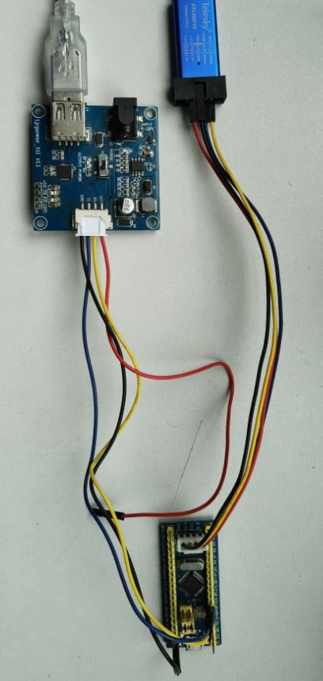
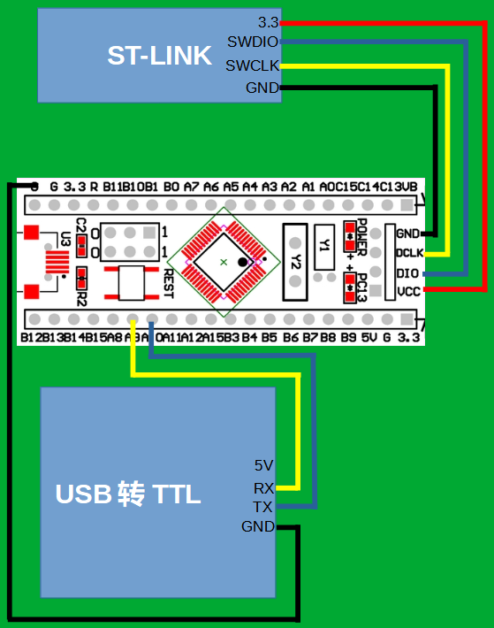
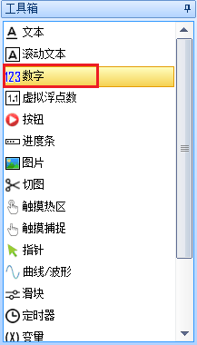
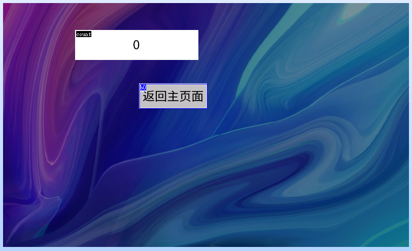
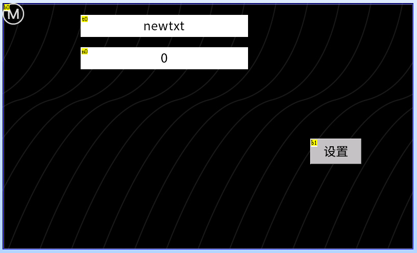
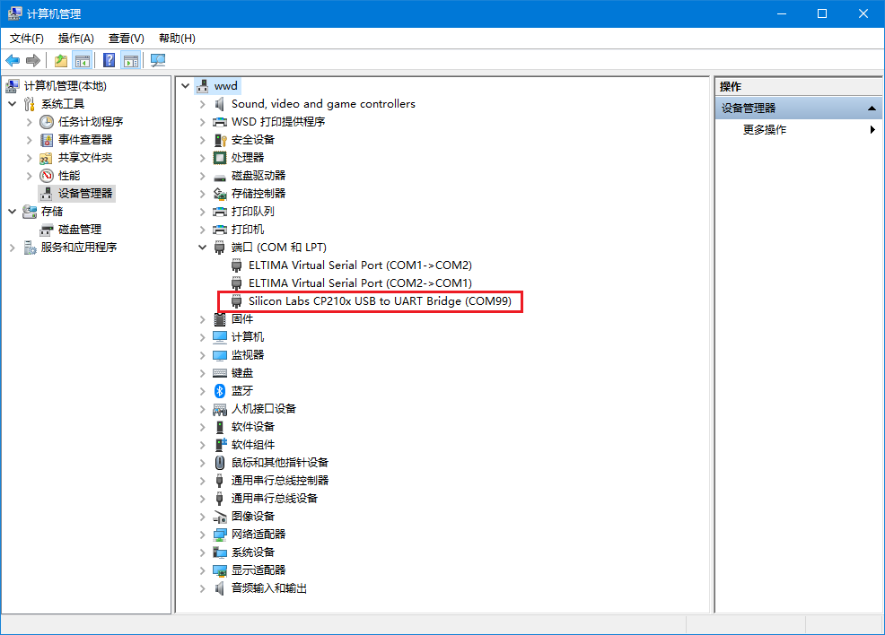
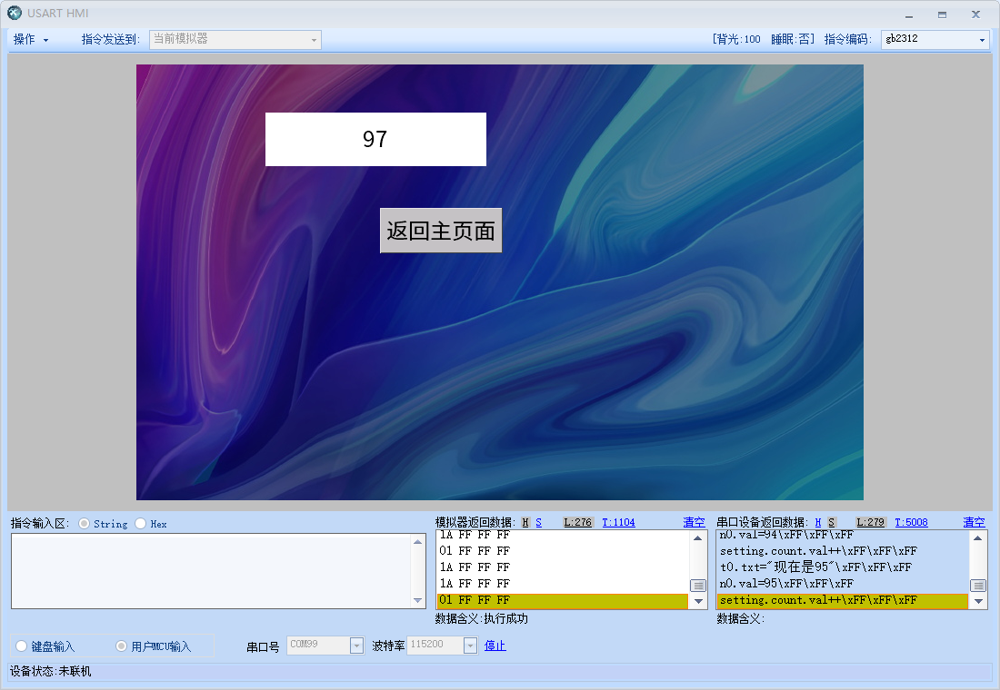
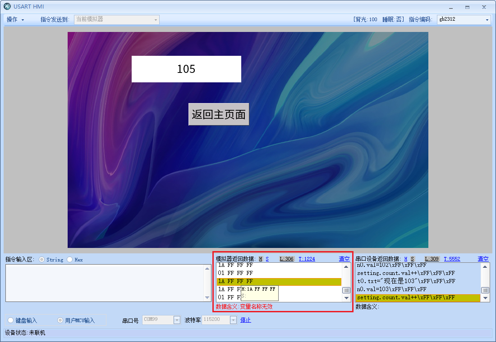

3.与单片机(stm32 + Keil MDK 5)联调
使用的单片机型号为stm32f103c8t6的最小系统板

通过手册我们查找到,PA9为TX,PA10为RX

连接方式如下所示
 回到串口屏上位机软件中,新建一个数字控件,并调整位置和大小
此时屏幕上最显眼的两个控件分别是t0(文本控件)和n0(数字控件)

我们再建立一个setting页面,用于演示跨页面赋值

setting页面的sta设置为图片,pic属性设置为1

在setting页面上放置一个数字控件count,放置一个按钮b0
将数字控件count赋值为全局变量

b0的txt属性设置为”返回主页面”
b0控件的弹起事件中写入跳转到主页面的指令

代码如下
1 page main
切换到main页面,新建一个按钮b1,b1的txt属性赋值为”设置”
b1按键的弹起事件中写入跳转到设置页面的指令

切换到program.s中,配置波特率/亮度/串口指令执行状态返回

program.s中完整代码如下所示
1 //以下代码只在上电时运行一次,一般用于全局变量定义和上电初始化数据
2 int sys0=0,sys1=0,sys2=0 //全局变量定义目前仅支持4字节有符号整形(int),不支持其他类型的全局变量声明,如需使用字符串类型可以在页面中使用变量控件来实现
3 baud=115200 //配置波特率为115200
4 dim=100 //配置亮度100
5 bkcmd=3 //打开串口指令执行状态返回
6 page 0 //上电刷新第0页
注意
指令必须写在page指令前面,page后面的指令是不会执行的
keil工程代码如下所示
1 /*********************************************************************************/
2 //STM32串口屏示例程序
3 //更多资料：http://wiki.tjc1688.com/
4 //单片机STM32F103C8T6 波特率：115200
5 /*********************************************************************************/
6
7 #include "delay.h"
8 #include "sys.h"
9 #include "usart.h"
10 #include <string.h>
11
12 void HMISends(char *buf1);
13 void HMISendb(u8 buf);
14 void beepms(u16 va);
15
16 u8 key,beep;
17 int a = 0;
18
19 void beepms(u16 va)
20 {
21 beep=1;
22 delay_ms(va);
23 beep=0;
24 }
25
26 void HMISendstart(void)
27 {
28 //向串口屏发送 00 ff ff ff 来结束单片机初始化期间IO翻转导致的屏幕接收到的错误数据,以保证屏幕可以正常解析第一帧数据
29 delay_ms(200);
30 USART_SendData(USART1,0x00); //发送0x00
31 while(USART_GetFlagStatus(USART1,USART_FLAG_TXE)==RESET){};//等待发送结束
32 USART_SendData(USART1,0xff); //发送0xff
33 while(USART_GetFlagStatus(USART1,USART_FLAG_TXE)==RESET){};//等待发送结束
34 USART_SendData(USART1,0xff); //发送0xff
35 while(USART_GetFlagStatus(USART1,USART_FLAG_TXE)==RESET){};//等待发送结束
36 USART_SendData(USART1,0xff); //发送0xff
37 while(USART_GetFlagStatus(USART1,USART_FLAG_TXE)==RESET){};//等待发送结束
38 delay_ms(200);
39 }
40
41 int main(void)
42 {
43 delay_init(); //延时函数初始化
44 NVIC_Configuration(); //设置NVIC中断分组2:2位抢占优先级，2位响应优先级
45 uart_init(115200); //串口初始化为115200
46 HMISendstart(); //清空串口屏里的指令
47
48 while(1)
49 {
50 //-----------------------------发送变化的字符开始--------------------------------
51
52 //定义一个字符串数组
53 char tjcstr[100];
54
55 /********示例1:给文本控件赋值**********
56 用sprintf来格式化字符串,给t0的txt属性赋值，
57 给控件的文本属性赋值时,内容需要用成对的 \" \" 包裹住,
58 当格式化的参数为字符串时，请保证字符串以\0结尾
59 *****************************************/
60 sprintf(tjcstr, "t0.txt=\"现在是%d\"", a);
61
62 //把字符串发送出去
63 HMISends(tjcstr);
64
65 //发送结束符
66 HMISendb(0xff);
67
68
69 /********示例2:给数字控件赋值**********
70 //用sprintf来格式化字符串，给n0.val属性赋值，同时加上结束符,
71 请注意给val属性赋值时,是没有 \" \" 的,
72 当格式化的参数为字符串时，请保证字符串以\0结尾
73 *****************************************/
74 sprintf(tjcstr, "n0.val=%d\xff\xff\xff", a);
75
76 //把字符串发送出去
77 HMISends(tjcstr);
78
79 //不用发送结束符,因为结束符已经被整合在字符串中了
80
81
82
83 /********示例3:跨页面赋值**********
84 //用sprintf来格式化字符串，setting页面的count.val自增，同时加上结束符,
85 请注意跨页面赋值时,需要把控件设置为全局,
86 *****************************************/
87 sprintf(tjcstr, "setting.count.val++\xff\xff\xff");
88
89 //把字符串发送出去
90 HMISends(tjcstr);
91
92 //不用发送结束符,因为结束符已经被整合在字符串中了
93
94
95 //延时1000ms
96 delay_ms(1000);
97 a++;
98
99 //-------------------------------------发送变化的字符结束-------------------------------------
100 }
101 }
102
103 //字符串发送函数
104 void HMISends(char *buf1)
105 {
106 u8 i=0;
107 while(1)
108 {
109 if(buf1[i] != 0)
110 {
111 USART_SendData(USART1,buf1[i]); //发送一个字节
112 while(USART_GetFlagStatus(USART1,USART_FLAG_TXE)==RESET){};//等待发送结束
113 i++;
114 }
115 else
116 {
117 return ;
118 }
119 }
120 }
121
122 //字节发送函数
123 void HMISendb(u8 k)
124 {
125 u8 i;
126 for(i=0; i<3; i++)
127 {
128 if(k != 0)
129 {
130 USART_SendData(USART1,k); //发送一个字节
131 while(USART_GetFlagStatus(USART1,USART_FLAG_TXE)==RESET){};//等待发送结束
132 }
133 else
134 {
135 return ;
136 }
137 }
138 }
注意
使用sprintf格式化字符串时,请保证参数为%s(即字符串)时,是以0结尾的字符串,否则将导致输出错误的结果
将程序下载到单片机后,将单片机通过USB转TTL小板连接到电脑上,通过设备可以查到当前的串口号为com99
点击调试进入串口屏的调试模式,可以看到串口屏顺利接收并解析了单片机发来的数据

可以点击S按钮,查看对应的字符串格式的数据,可以看到单片机发送出来的数据是65,屏幕上显示的数据也是65

点击”设置”按键切换到设置页面,可以看到全局变量count也是在不断的自增
同时我们也会看到一些报错信息,因为当前页面没有文本控件t0和数字控件n0,因此单片机提示变量名称无效
小技巧
建议需要由单片机通过串口传输给串口屏的变量设置为全局变量,并且以页面名称.控件名.属性的方式来赋值,例如setting.count.val=100